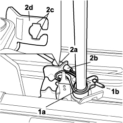
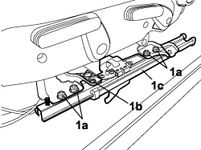
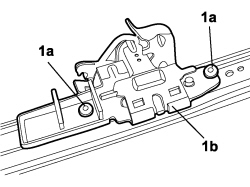
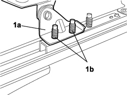
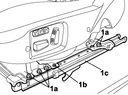

7045A67 SLIDING GUIDE (ONE), LEFT OR RIGHT FOR FRONT SEAT - R.R WITH SEAT REMOVED
- Path
- Procedures > 70 FITTINGS > 7045 FRONT SEATS > 7045A FRONT SEAT ASSEMBLY > 7045A67 SLIDING GUIDE (ONE), LEFT OR RIGHT FOR FRONT SEAT - R.R WITH SEAT REMOVED
- Kind
- repair procedure (removal / refitting; the operation number is the code)
- Applies to
- all engines; all production periods; only with equipment: ELECTRIC SEATS
- Interactive page
- https://sloeber94.github.io/elrnDB-fCrm/en/#/194001104
Applies to: all engines; all production periods
 Removing
Removing
 Refitting
RefittingVALID FOR OUTER GUIDE ONLY
Op. 7045A63 FRONT SEAT GUIDE OUTER GUARD (ONE), LH OR RH - R R
VALID FOR INNER GUIDE ONLY
1. Rotate the mechanism (1a) and release the end (1b) of the cable.
2. Rotate the end (2a) so that the retaining tabs (2b) are aligned with the slots (2c), press the retaining tabs and release the end from the bracket (2d).

Applies to: all engines; all production periods
VALID FOR BOTH
1. Unscrew nuts (1a) recovering the underlying washers, unscrew bolt (1b) and remove sliding guide (1c) from the seat.
- For the inner guide, after unscrewing the nuts at the front, recover the pretensioner reaction bracket.

Applies to: all engines; all production periods
1. Undo the fixing bolts (1a) and remove the release device (1b) from the sliding guide.

Applies to: all engines; all production periods
Refitting
Removing- Position the release device on the sliding guide and tighten the bolts.
- Fit the sliding guide to the seat and tighten the nuts.
- For the inner guide, fit the pretensioner reaction bracket at the front.

Applies to: all engines; all production periods
VALID FOR INNER GUIDE ONLY
- Secure the terminal to the bracket and attach the cable terminal to the mechanism.
VALID FOR OUTER GUIDE ONLY
Op. 7045A63 FRONT SEAT GUIDE OUTER GUARD (ONE), LH OR RH - R R
Applies to: all engines; all production periods; only with equipment: ELECTRIC SEATS
Removing
RefittingVALID FOR OUTER GUIDE ONLY
Op. 7045A63 FRONT SEAT GUIDE OUTER GUARD (ONE), LH OR RH - R R
VALID FOR BOTH
1. Unscrew nuts (1a) recovering the underlying washers, unscrew bolt (1b) and remove sliding guide (1c) from the seat.
- For the inner guide, after unscrewing the nuts at the front, recover the pretensioner reaction bracket.

Applies to: all engines; all production periods; only with equipment: ELECTRIC SEATS
Refitting
Removing- Fit the sliding guide to the seat and tighten the nuts.
- For the inner guide, fit the pretensioner reaction bracket at the front.
VALID FOR OUTER GUIDE ONLY
Op. 7045A63 FRONT SEAT GUIDE OUTER GUARD (ONE), LH OR RH - R R